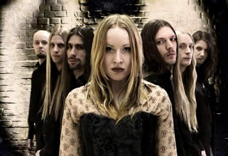
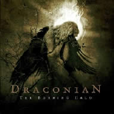

Entrevista
de Anders Jacobsson a Erin Fox - The Gauntlet - Agosto de 2005
Quais as semelhanças
entre o novo álbum Arcane Rain Fell e Where
Lovers Mourn?
Talvez as semelhanças sejam a estrutura das músicas
e as bases. Uma música como The Everlasting Scar
é muito mais bela se comparada à Where Lovers
Mourn. Mas, acima de tudo, eu percebo que nós fomos
muito mais detalhistas neste novo trabalho. A sonoridade é
sofisticada e nós estamos muito satisfeitos com o resultado.
Para o próximo álbum nós queremos uma sonoridade
mais suave; não como em Arcane Rain Fell. Quando
uma música é muito "limpa" parte do
peso e da atmosfera emocional são perdidas. Veja o My
Dying Bride, o som deles não é muito limpo,
mas é profundo e sólido.
Vocês
adotaram um novo rumo musical intencionalmente ou a mudança
foi natural?
Foi intencional. Foi decidido mesmo antes de entrarmos em estúdio
para gravar Where Lovers Mourn... Tentamos fazer parte
da cena Doom. Nós ainda somos bem no estilo "Romantic
Gothic Draconian". No próximo álbum esperamos
conseguir unir estas duas vertentes e assim teremos o verdadeiro
Draconian. Arcane Rain Fell foi o melhor que podemos
fazer neste momento; mas é também o que nós
queríamos. Eu acredito que não somos uma banda
de Doom. Apenas estávamos inspirados neste momento.
O que os ouvintes podem encontrar
na música do Draconian que não pode ser encontrado
em nenhuma outra banda?
Pergunta difícil. Eu realmente não sei, mas acredito
que somos mais conservadores que outras bandas do nosso gênero.
Acredito que não nos tornaremos uma banda comercial.
Seremos góticos e doom e nunca deixaremos de usar gutural.
Estamos muito seguros com nossa música e não nos
importamos com aspirações comercias; estamos aqui
para a música e é isto!
Quais são
os artistas contemporâneos que vocês admiram?
Pode soar comum, mas é claro que My Dying Bride.
Eles provam que amam a própria música e eu considero
isso admirável. Eu também admiro bandas que passaram
por momentos difíceis e não se separaram. Se o
que você faz, faz por amor, não há nenhuma
razão de abandonar. Encare o problema e mude. Isso é
que faz uma banda forte.
A música
do Draconian é muito lenta. Tecnicamente é mais
difícil tocá-la?
Bem, às vezes pode ser um desafio. Mas nunca foi realmente
um problema. É necessário sentir mais a música,
concentração e focar o aspecto emocional. Nós
amamos a nossa música e por isso podemos investir nisso.
O
que significa a capa do novo disco?
É Lúcifer (o Anjo que se rebelou e caiu) depois
de sua passagem pelo Céu, refletindo sobre sua condição
e amargurado com a derrota.
A Scenery of Loss tem
uma sonoridade muito pesada. Como isto foi conseguido?
Eu realmente não sei. Johan gravou os violões
na pré-produção, mas nunca ficou satisfeito
com o resultado. Ele entende que poderia ter sido melhor, especialmente
no início da música.
Você vê a música
que você cria como uma manifestação das
suas emoções?
Sim, mais de depressão e amargura. Como um tumulto emocional
após um fracasso.
Quais fatores externos produzem
as emoções manifestadas em Death Come Near
Me? Que circunstâncias vocês viviam quando
compuseram este épico?
A música foi composta entre o fim de 2001 e o início
de 2002. Mas a letra já havia sido escrita um ano antes.
Nossa intenção era compor algo semelhante ao The
Cry of Silence, eu suponho. Como em The Cry of Silence,
nós também nos concentramos em uma melodia e uma
atmosfera obscura. Depois que a base estava pronta eu reescrevi
a letra e inserimos os vocais. O resultado foi muito bom e gravamos
em nossa última demo. Há pouco tempo nós
a adaptamos para Arcane Rain Fell, mas dificilmente
se percebe. A música se tornou muito triste e melancólica,
porque era assim que queríamos.
Quais as bandas mais famosas que
vocês gostariam de tocar junto?
My Dying Bride, Novembers Doom, Mourning Beloveth, Saturnus,
Necare, Tristania,
The
Sins of Thy Beloved, Opeth, Officium Triste, Swallow the
Sun, Trail of Tears... e por aí. Mas tocar com My
Dying Bride seria a melhor experiência, não
há dúvida disso.
Foi uma experiência positiva
gravar Arcane Rain Fell? Há alguma coisa que
vocês gostariam de ter alterado ou estão satisfeitos
com o resultado?
Sim, foi. Nós aprendemos muito. Estamos muito satisfeitos
com o resultado, mas eu penso que os teclados ficaram muito
baixos e também o que eu expliquei na primeira pergunta.
Qual o potencial que você
percebe neste tipo de música para atingir um público
maior?
Talvez se nós fizéssemos algumas baladas épicas
e melancólicas especialmente para Lisa. Mas assim eu
percebi que somos bem recebidos por pessoas fora de nosso gênero.
Por muitos anos nós recebemos boas críticas, como
de Ordinary People. Isso é muito bom, realmente.
Que tipo de emoção
vocês pretendiam despertar com a música?
Exultação e libertação, eu suponho.
Quando nós concluímos uma nova música ficamos
muito entusiasmados para tocá-la. Isto nos faz lembrar
porque trabalhamos com este tipo de música. É
como um novo começo e nós percebemos porque a
música é tão recompensadora.
Como os ouvintes podem relacionar
o Draconian à outras bandas semelhantes?
Eu não tenho idéia.
O que você sente ao tocar
este tipo de música?
Eu acredito que já respondi esta pergunta. Mas eu posso
afirmar que eu amo a escuridão e as emoções
que a compõem. Esta música com a letra certa é
sucesso garantido.
Onde os fãs poderão
ver a banda? Há algum festival agendado?
O único festival agendado é o Summer Breeze
na Alemanha. É algo que nós estamos nos preparando
há algum tempo.
A banda está compondo novo
material? Quando os fãs podem esperar um segmento de
Arcane Rain Fell?
Estamos compondo novo material. Temos talvez duas músicas
terminadas. São realmente duas grandes canções.
Eu não tenho idéia de quando gravaremos um novo
álbum, talvez no meio do ano que vem. Temos planos de
gravar um "bônus" em breve, com algumas músicas
novas, também com algumas regravações e
outras releituras. O álbum será lançado
pela Napalm Records, como sempre.
Extraída
de www.thegauntlet.com
Traduzida
e adaptada por Spectrum